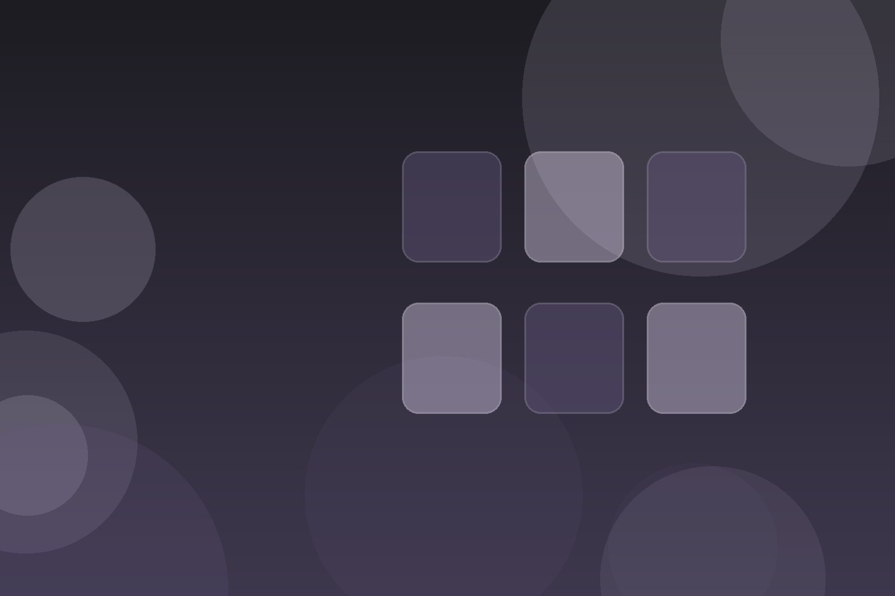
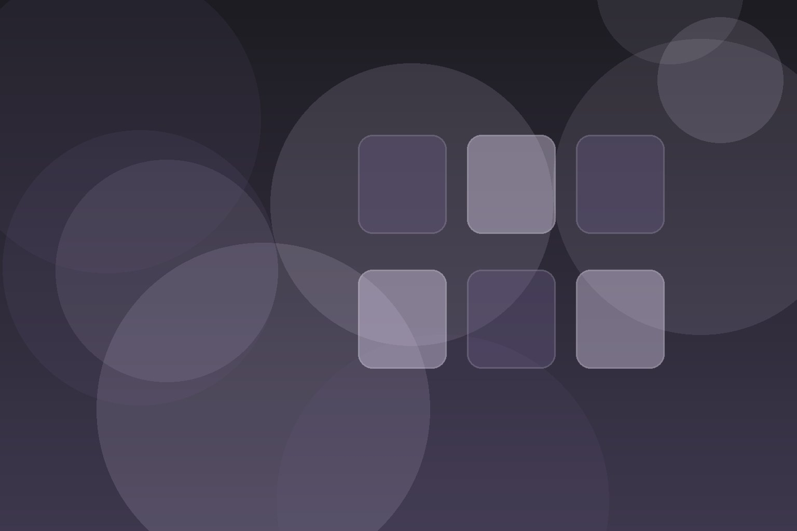
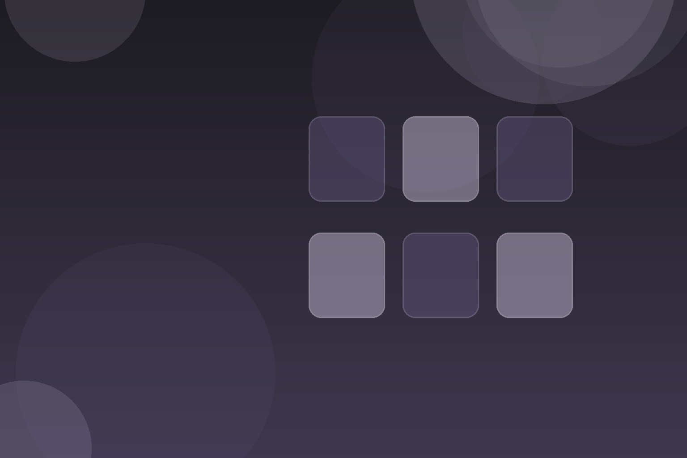

New Arrivals
New Arrival
Current product arrival

BIKE SHOP
Collections, services and store information are structured around how shoppers actually browse.
WHY IT WORKS
Visitors can understand what is offered before they contact the business. The next steps are visible and easier to act on.
CATALOG
New Arrivals
Current product arrival
Collections
Core assortment
Collections
Higher-spec assortment
Seasonal
Limited seasonal assortment
Collections
Curated giftable products
Services
Availability-based special order
Collections
Core everyday assortment
Collections
Smaller rotating or limited assortment
Collections
Curated frequently selected assortment
Collections
Higher-spec material or finish assortment
Collections
Accessible entry assortment
Seasonal
Time-limited seasonal collection
FEATURED PATHS
Each path connects to the full catalog so the homepage stays useful without becoming a wall of generic cards.
New Arrivals
Current product arrival
VariesCollections
Core assortment
VariesCollections
Higher-spec assortment
VariesRETAIL COMMERCE
Visitors can understand what is offered before they contact the business.
The next steps are visible and easier to act on.
Pages are organized around customer questions instead of filler content.

ABOUT THE EXPERIENCE
Fits that match your body and rides—not just the frame on the wall.
Everything is organized around the questions customers usually need answered before they take the next step.
About Emro FrPROCESS
Clear next steps and responsibilities at this stage.
Clear next steps and responsibilities at this stage.
Clear next steps and responsibilities at this stage.
Clear next steps and responsibilities at this stage.
VISUAL SYSTEM
Separate images are planned for story, detail and environment instead of repeating one stock photo everywhere.


FAQ
Start with the primary contact path and share the specific outcome, timing and constraints involved.
No. Pricing, availability, policies and business details marked as demo should be verified before production.
Yes. Demo forms are intentionally non-transmitting until a real endpoint or workflow is configured.
NEXT STEP
Share what you need, your timing and the details that will help the team respond clearly.